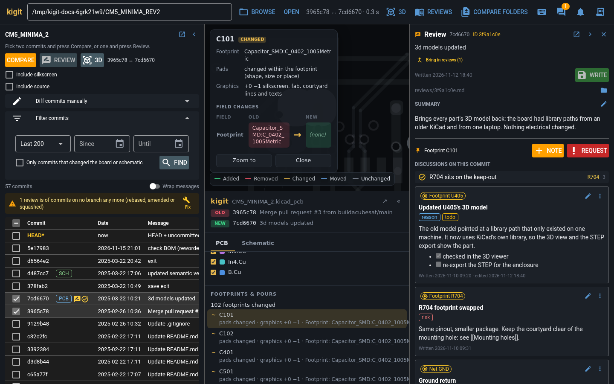
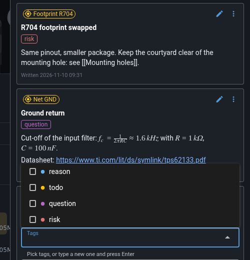
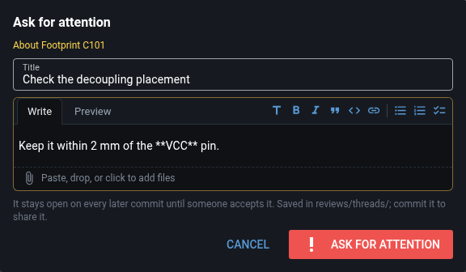
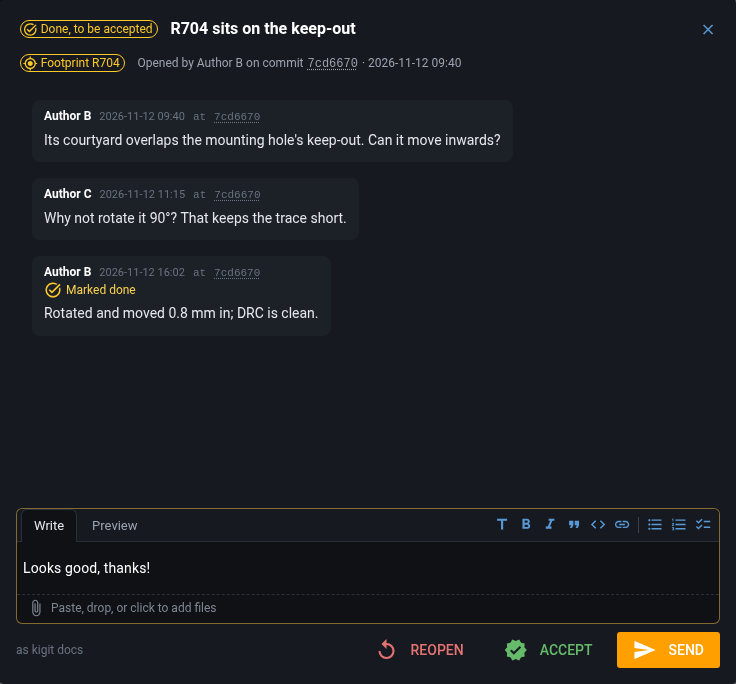
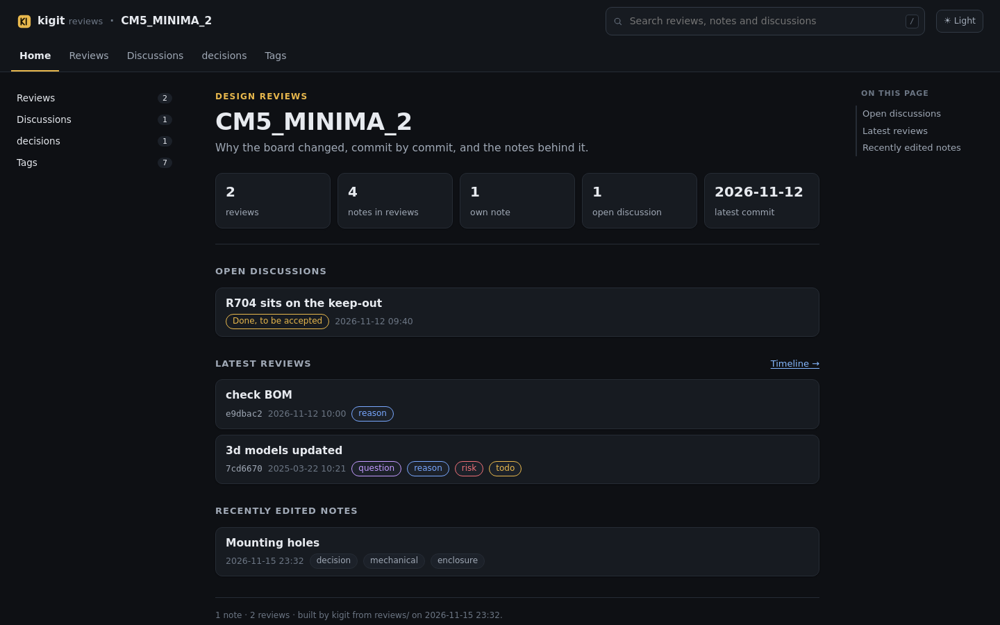
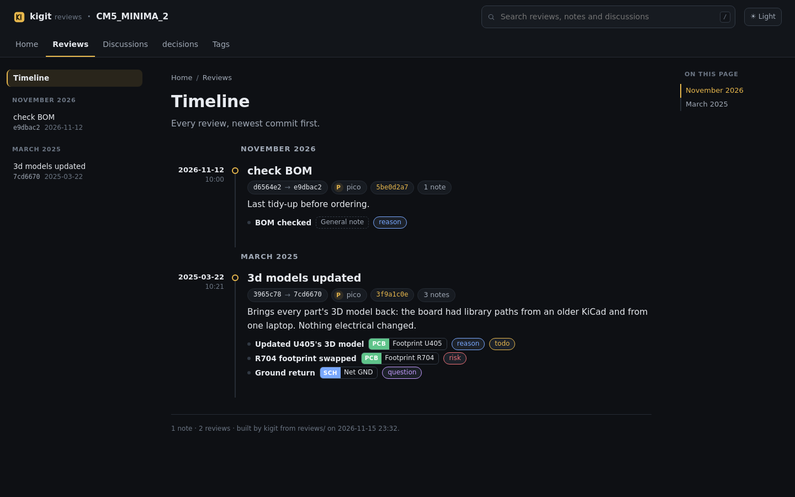
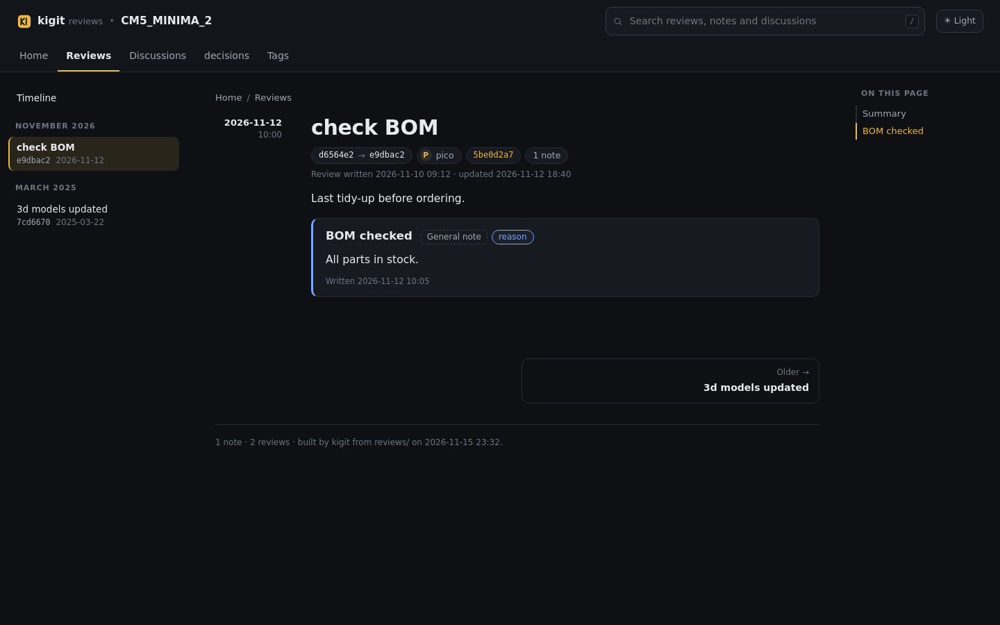
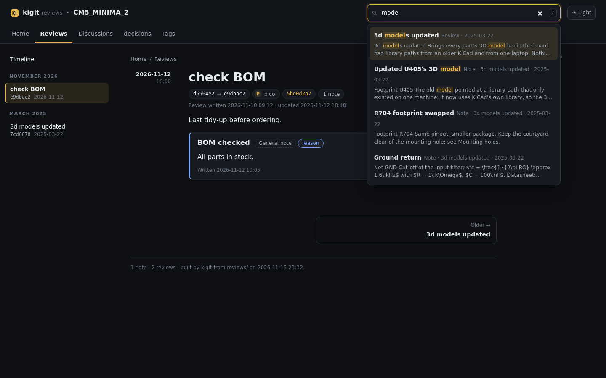
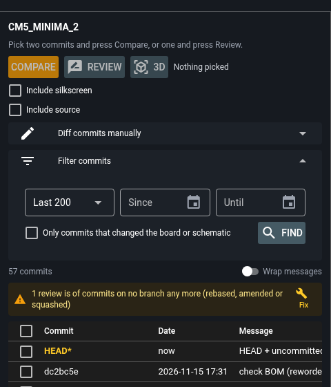
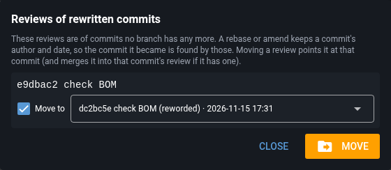

Reviews¶
A review is your note on why a commit changed what it changed: the reasons behind a layout move, a part swap or a new net, written while you look at the diff, and kept with the project. Reviews are plain Markdown files, so they read fine on GitHub, in any editor, or in Obsidian.
Review a commit¶
In the GUI, pick one commit and press Review. kigit compares it with the commit before it, and the review panel opens on the right. (Comparing a commit with its parent opens its review too.)

- Summary: the commit as a whole.
- Notes: click a net, footprint, part or bus in the viewer to pin it, then press + Note: the note points at it. Click the note's chip later to show it again in the viewer. Without anything pinned, the note is a general one.
- Titles: press on a note and its title becomes a text box, like its text.
-
More than one thing, or the wrong one: pin something else in the viewer, then use next to the note's chips. Add what's pinned points the note at that too (a note can be about several parts, nets or footprints), Replace with what's pinned points it there instead, and Make it a general note drops them all. The ✕ on a chip takes just that one off.
A note remembers the two commits it was pinned in, so it can still show a net or part that commit deleted: its chip turns red and says "removed".
-
Each note shows when it was written and, if it was changed afterwards, when it was last edited.
Press Write (or Ctrl+S) to save. Until then the panel says "Unsaved changes"; if you switch to another commit first, your edits are kept as a draft for the session, and closing the page asks before throwing them away. Reviewed commits get a mark in the commit list. Delete everything in a review (summary and notes) and Write, and its file is removed, mark and all.
Writing notes¶
Text is Markdown: lists, code, tables, links. The text boxes (the summary, notes, and discussion messages) work like GitHub's comment box:
- Write / Preview: Preview shows it as it will look, math included.
- Toolbar: heading, bold (Ctrl+B), italic (Ctrl+I), quote, code, link, bulleted, numbered and task lists. Select text first to format it; press again to undo it. Ctrl+Z undoes too.
- Files: paste, drop, or click Paste, drop, or click to add files under the box. Pictures show in the text; any other file (a datasheet PDF, a scope capture, a log) becomes a link named after it. They're saved in
reviews/assets/; PDFs and pictures open in the browser, other files download. - Pictures open full size when you click them, in kigit and on the Reviews page (click again or Esc to close). Obsidian's
![[picture.png]](or![[picture.png|300]]for a width) works too: kigit finds the picture by name anywhere inreviews/. - Links: select the words to link and press (or Ctrl+K), then give the address. Web addresses typed as they are (
https://...) become links by themselves. - Math is LaTeX, as in Obsidian:
$f_c = \frac{1}{2\pi RC}$in a line, or$$ ... $$on lines of its own for a displayed equation. Prices like "$5 and $10" stay text; write\$for a dollar sign next to something that would look like math. - Tags: pick them from the dropdown: the built-in ones (reason, todo, question, risk) and any tag used elsewhere in the project. Type a new one and press Enter to add it; it's saved as one lower-case word ("Needs Review" becomes
needs-review), as Obsidian expects.

Where reviews are kept¶
One Markdown file per commit, in the reviews/ folder next to the board:
reviews/
index.md every review: ID, commit, date, author, subject (rebuilt on each Write)
3f9a1c0e.md one review; its ID is its file name
assets/ added files: pictures, datasheets, ...
threads/ discussions, one file each (see below)
decisions/ your own notes, if you like (see below)
Each review gets an ID when first written, which is also its file name. Commit the folder with the project to keep the reviews with the design.
Discussions: asking for attention¶
Notes explain a commit. When something in it needs someone to act, like a part that's too close to a hole or a value to double-check, open a discussion instead, as you would comment on a pull request. Anyone with the project can reply, mark it done, and accept it.
Ask for attention¶
In a commit's review, pin what it's about in the viewer (or nothing, for the commit as a whole) and press Request. Give it a title and say what needs attention.

Talk it through¶
The Discussions button in the header lists them, with a count while any are active: red while one needs attention. Open one to see it as a chat, and reply: what you changed, or a question.

A discussion moves through three states:
| State | Means | Buttons |
|---|---|---|
| Needs attention | Someone asked; nobody has dealt with it yet | Mark as done |
| Done, to be accepted | It's been dealt with; the reviewer checks it | Accept, Reopen |
| Accepted | Settled: the discussion is closed | Reopen |
Anything you type in the reply box goes along with the button you press ("Moved it 1 mm left", then Mark as done).
If you opened a discussion, next to its title renames it (the chat keeps the old title), and next to what it's about changes that, the same way as for notes: add what's pinned in the viewer, point it there instead, or make it about the commit in general; ✕ on a chip takes one off. The chat records the change ("Now about Footprint Y1, Part C5").
To change something you wrote, press on your message, edit it, and Save. Only your own messages have the pencil (they're signed with your git name). The message stays where it was and shows edited. deletes one of your comments, after asking. Status changes (marked done, accepted, reopened) can't be deleted, since that would change the status; edit their text instead.
Linking to a discussion or a review¶
at the top of a discussion copies a link to it, [its title](threads/<id>.md). Paste it into a review's summary or note, or into another discussion: it shows with a 💬, and clicking it opens the discussion. On the Reviews page it goes to the discussion's page, and it's an ordinary link to the file on GitHub or in Obsidian.
Discussions listed in a review (and in the header's Discussions list) have their own button too.
Reviews can be linked the same way: right-click a commit with a review in the commit list and choose Copy review link ([commit message](<id>.md)). Clicking it in a note or a discussion opens that review. The same menu has Copy review file path (the full path of its file) and Copy commit hash.
Mentions¶
A discussion shows where it's linked from, in among its messages at the time it happened: "Author B mentioned this in the discussion USB-C recessed" (or the review of ...). Click it to go there. On the Reviews page, discussions and reviews have a Mentioned in list.
When someone else links to a discussion you opened or wrote in, the shows an @ and a notification says where (it also pops up). Mentions that come with a git pull arrive the same way, within a few seconds. kigit keeps which ones you've seen in its app folder, per project; the first time it sees a project, mentions already there count as seen.
Nothing is written into the linked discussion: mentions are worked out from the links themselves, so editing or deleting the message with the link takes the mention away too.
If a linked discussion or review is gone (deleted, or not pulled yet), kigit warns you: when you click the link, and when you open, write or send something that links to it. The warning also goes to the session log and the notifications. On the Reviews page the link shows greyed out.
Jump to the commits¶
The commit hashes in a discussion are links (dotted underline). Click one to compare the commit the discussion was opened on with that commit, and the viewer shows what the discussion points at, pinned and zoomed to:
| Click | Compares |
|---|---|
| a message's at hash | where it was opened → that message's commit: what had changed by then |
| Opened ... on commit hash (or the first message's) | where it was opened → HEAD: where it stands now |
So if a part was deleted along the way, you still see it, marked removed, at the place it was, instead of searching the history for where it went.
Across commits¶
A discussion belongs to the project, not just the commit it was opened on. Until it's accepted, it stays on:
- every review, under Still open from other commits, so the commit with the fix is where you mark it done;
- the commit list, as a flag on the commit it was opened on (red: needs attention, amber: done, green: accepted);
- the Discussions list and its count in the header.
Sharing them¶
Each discussion is one Markdown file in reviews/threads/, written the moment you send a message: there's no Write step. Commit and push it like any other change; whoever pulls sees the discussion, and the GUI notices new or changed ones by itself (within a few seconds). Messages are signed with your git name (git config user.name).
Messages are only ever added at the end of the file, so two people replying to different discussions never conflict. If two of you reply to the same one at the same time, git shows a small conflict at its end: keep both messages.
The Reviews page shows the discussions too, needing attention first.
The Reviews page¶
Reviews in the header opens the project's reviews, notes and discussions in a new tab, laid out like a documentation site: one page each, with tabs, a sidebar and a search box.

- Tabs across the top: Home, Reviews, Discussions, then one tab for each folder you keep in
reviews/(for exampledecisions/ormeetings/), Notes for Markdown files directly inreviews/, and Tags. - The sidebar on the left lists the pages in that tab (reviews by month, discussions by status, a folder's notes by subfolder). On this page, on the right, lists a page's notes or headings.
- Search (or press /) looks through every review, note in a review, note of your own and discussion as you type. Use Up / Down and Enter to open a result.

- Reviews have a page each: the commit and author, the summary, then every note, marked with what it points at (PCB or schematic; red if it was removed) and coloured by its first tag. Newer and Older at the bottom step through the timeline.
- Your own notes are any other Markdown files in
reviews/(design decisions, test results, ...), for example written in Obsidian. Frontmatter shows as properties, andtags:and#tagsgo to the Tags tab.[[links]]and[text](other-note.md)go to other notes, or to a review by its ID or its commit's message. Links to other files inreviews/(a datasheet PDF, say) open them, and![[picture.png]]embeds a picture. - It follows your system's light or dark theme, or the Theme button's choice.


After a rebase, amend or squash¶
These replace commits with new ones (new hashes), so a review can be left pointing at a commit no branch has any more. Its file isn't touched, but the commit list no longer shows it as reviewed. A plain merge (or fast-forward) keeps the commits as they are, so nothing changes then.
When the GUI finds such reviews, it says so above the commit list:

-
Fix lists them. A rebase or amend keeps a commit's author and author date, so the commit it became is found by those and picked for you; press Move to point the review at it (notes pinned in that commit follow it too). If that commit has a review already, the two are merged.

-
A squash makes one new commit with a new date, so it can't be matched. Pick the squashed commit, press Review, then Bring in reviews: tick the reviews that went into it (those its message names, as
git merge --squashand GitHub's "Squash and merge" do, are ticked already). Their summaries and notes are added to this review, and their files are removed when you press Write.
Git deletes replaced commits after a while (about a month), so a review you never move keeps its text but can no longer be matched automatically; Bring in still works.